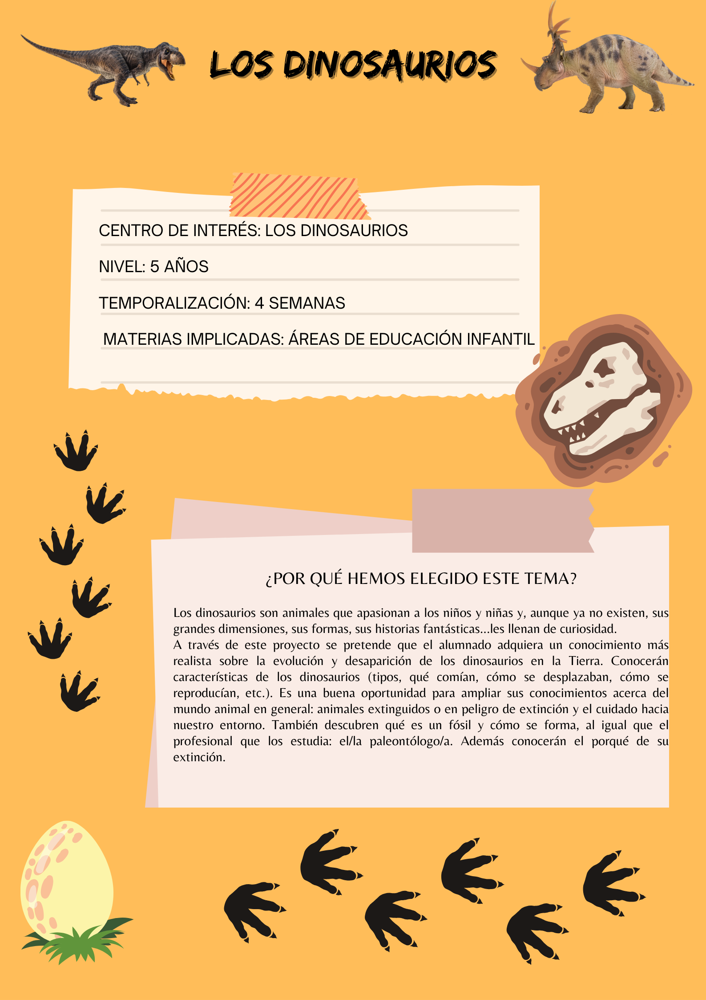
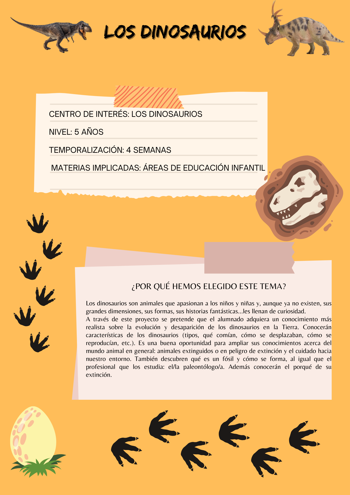

Presentación del proyecto


En el siguiente enlace encontraréis todo el contenido digital que vais a necesitar para llevar a cabo este proyecto: videos, juegos, enlaces a aplicaciones, etc.
A continuación, os dejo las herramientas que suelo utilizar en mi práctica docente, por si os es de utilidad:
Os muestro la organización del proyecto reflejada en una línea temporal donde se detallan las sesiones, tareas, agrupamientos, herramientas utilizadas, espacios, etc.
Obra publicada con Licencia Creative Commons Reconocimiento Compartir igual 4.0